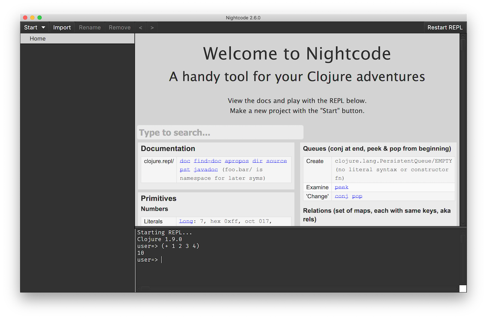
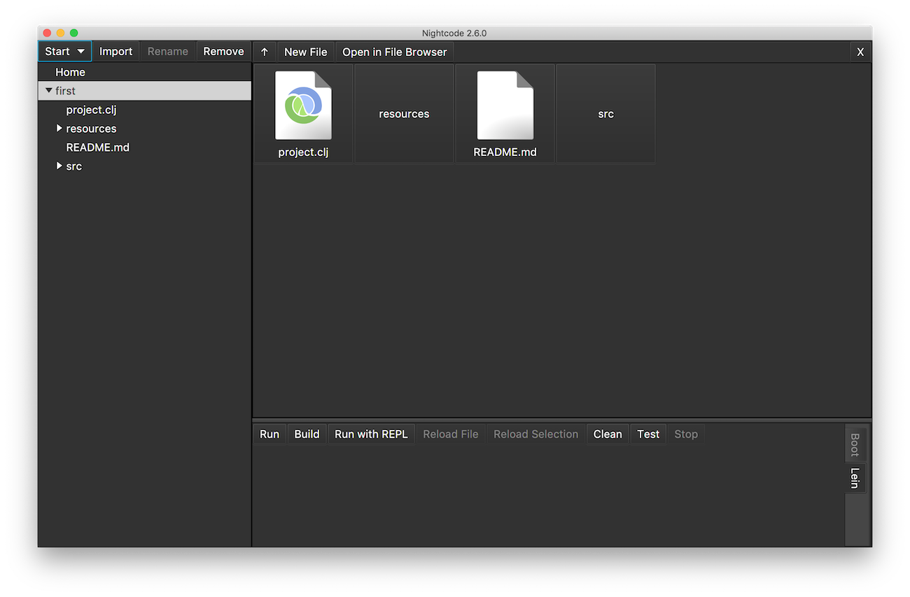
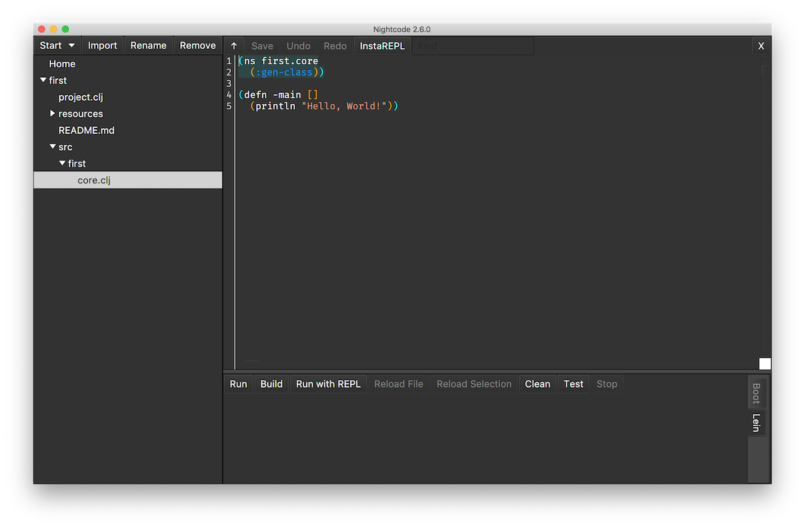
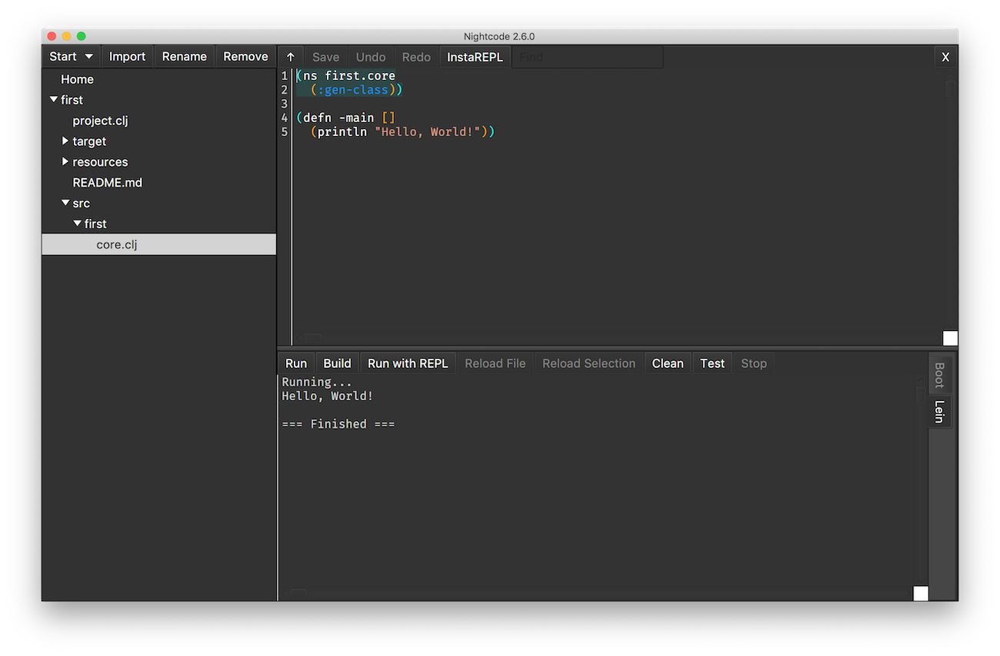

Installation and Purpose
Clojure is a dialect of Lisp, a language designed in 1958 and still in use. Because Lisp was created so long ago, there are concepts in computing that are now common, but didn't exist way back then. For example, parallel computing was not a thing so Lisp doesn't have parallel computing 'baked in' from the beginning. It has been added, but since it is added on, it can be somewhat clunky. Clojure, on the other hand, was designed to leverage what is good about Lisp and the parallelism available in the Java Virtual Machine. Clojure was also designed to be a functional programming language, making parallel programming safer and easier.
Clojure being one of many functional programming language means that, in Clojure, collections of data and individual pieces of data are immutable. In other words, there are no variables in Clojure. While this may come as a shock to you because of your Python background, it is a completely valid way of writing very good code. It also means that you can write parallel code without creating the two huge, common problems in parallel code written for languages that have variables, race conditions and cross or dead-locks. Thankfully, Clojure and other functional programming languages don't have variables, and so it's impossible to create either of these problems.
Another advantage of being a functional programming language is that functions are and can be treated just like data. You can pass a function as a parameter, you can return a function from a call to a different function, and many other very cool things. This means that functions like map, filter, and reduce, you saw these in Python, are no different than any other function you can create, and you don't need that weird lambda keyword that Python has. Also, since functions are data, you can put functions in lists and maps. When done well, this makes your code extremely flexible and powerful.
Take a look at Figure 1. It shows the ancestery of both Clojure and Python. Since Clojure and Python share some ancestory, you can expect to see echos of things in Python in Clojure. An example of this is the concept of a range. However, Python is not Clojure's only ancester, nor its most significant one. The strongest contributor is Lisp, followed closely by Haskell, so you can expect to see Lisp-ish syntax that is significantly different than what you learned for Python.
If it isn't already installed on your machine, start by installing the JDK (Java Developer Kit) for your computer. The link leads you to download an installer. Run the installer using the default values the installer suggests. The JDK includes the Virtual Machine, not a real piece of hardware, that your Clojure code will run on. By leveraging this VM, your clojure code won't need to be compiled to run on your specific hardware.
The Integrated Development Environment (IDE) you use in this class is Nightcode, a very helpful too.
While there are many editors and IDE's that can be used to write Clojure, Nightcode was selected for this class because it doesn't hide the Clojure toolset from you, yet it makes it much easier to do the write-run-debug cycle that is programming.
After you have installed the JDK and Nightcode, run Nightcode. You should now see this.
In the bottom section of the window, you'll see the Clojure REPL (Read-Eval-Print-Loop) running. This is much like the Python REPL so you can type in valid Clojure and execute it just like you could in the Python REPL.
As a preview of things to come, let's use the REPL to add together four numbers, 1,2,3, and 4. Type into the REPL the code you see in this image.
Here you see the impact of having Lisp as Clojure's strongest ancestor instead of C. Python's + operator is borrowed from and acts much like the + operator in C. Clojure doesn't have a + operator. Instead it has a + function. We'll get into this in detail later, but what you've done in this code is pass multiple parameters, the numbers 1, 2, 3, and 4, to Clojure's + function. This is, after all, a functional programming language so you can expect it to use functions whenever possible. 😍
Also notice that Clojure doen't have commas seperating the parameters where as Python does. Python borrowed that syntax from C.
In Nightcode, from the Start pulldown menu select Console Application, all the apps in the class will be console apps. You will be presented with a dialog box asking you to select, or create, a directory to put your project in. You can put this anywhere on your computer that makes sense to you. I'd suggest something like the documents directory and creating a directory called 'night_code_projects'. Call your project 'first'. Nightcode now looks like this.
Ignore, for now, the clj and README.md files. Instead, expand src by clicking on the triangle in front of src. Do the same for the first inside of src. Now click the core.clj file. You are now seeing how to define a main function much like the one you saw in Python.
Here Clojure's functional programming is showing. You are calling the defn function and passing it the first parameter which is the name of the function you are defining. the [] indicate that it has no parameters. The second parameter, surrounded by parenthasis is a call to the print line function. We'll learn more about functions later, but notice that each time a function is called, the name of the function and its parameters are surounded with parenthasis. This may seem like weird syntax to you. This is because you learned Python before you learned Clojure. Down't worry. You'll quickly get used to the parenthasis.
Run your app by clicking 'Run'. It will take a few seconds to load and compile everything, but soon you'll see "Hello World!" at the bottom of your window.
Congrats!!! You're all set up and ready to go. If you want to see all the functions that pre-exist as part of Clojure, you can take a look at the Clojure API.